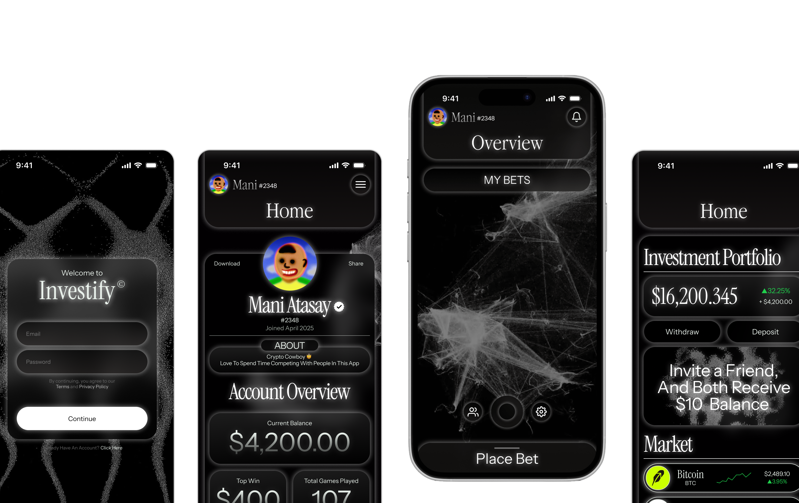
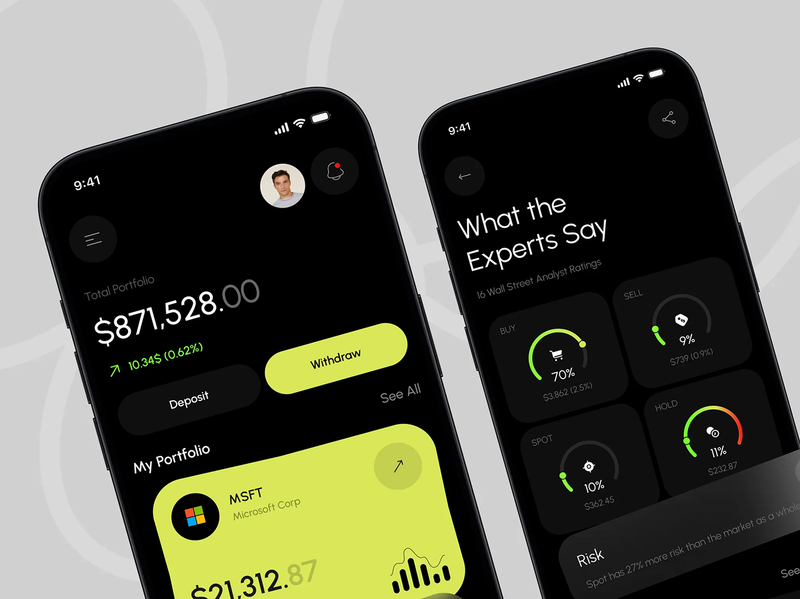
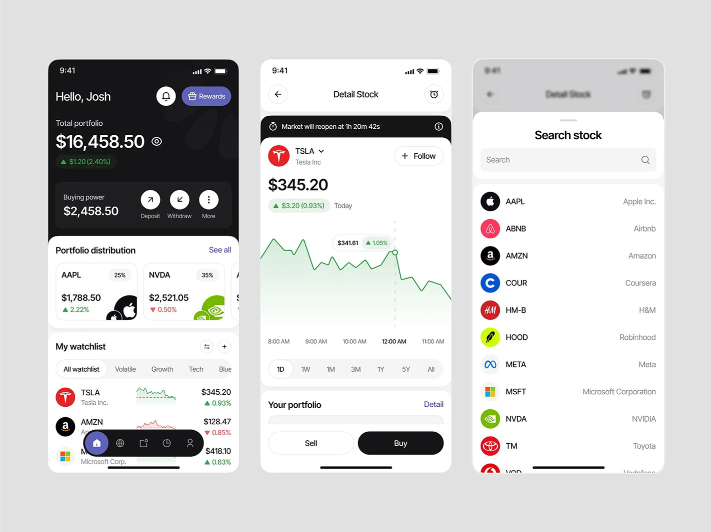
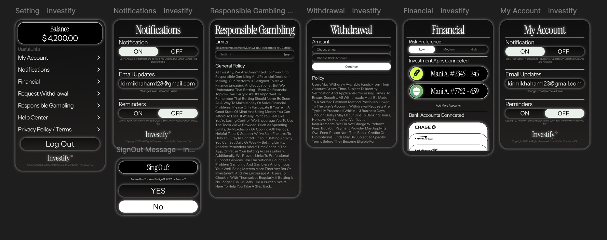
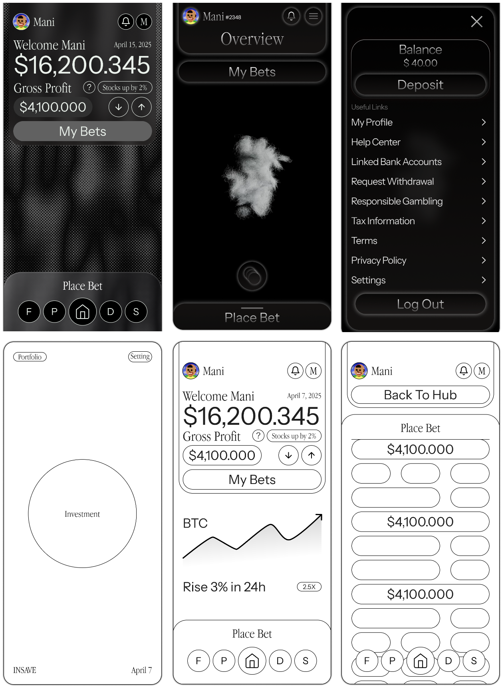

Case study — Academic project
Investify // Finance for Gen Z

Overview
One generation, one money problem.
For this project, each student was assigned a generation and a problem space, then asked to design a platform for it — brand identity and UI included. I was assigned Gen Z, and my research quickly surfaced the same struggle over and over: day-to-day budgeting, paying off debt, and figuring out how and where to invest.
Problem
Too many tools, too much anxiety.
Generation Z has money problems. From day-to-day management to investing, it's the sheer number of financial tools and choices that creates anxiety and decision paralysis.
Solution
One app, connected to the bank you already use.
Investify connects to a user's primary bank account, letting them manage day-to-day finances and start investing through a simple, gamified experience.
Precedents
Looking at how finance apps already talk.
Robinhood-style portfolio dashboards and research-driven trading apps both informed the tone: confident numbers up front, detail one tap away.


"Gen Z doesn't want another spreadsheet,
They want money to feel like a game."
UI strategy
Scoped for six weeks, built to grow.
With only six weeks, this round focused on visual design and information architecture rather than formal user research or usability testing. It's a proposed concept, meant to be tested and developed further.
Branding approach
Minimal, round, and glassy.
Finance apps have been trending toward minimal, round-edged interfaces. Investify leans into that minimalism and adds a twist: transparency in its buttons and surfaces, to feel light rather than clinical.
.png)
Brand direction: minimal, round, glassy surfaces
Account & settings flow
Even the fine print stays on-brand.
Settings, notifications, responsible gambling, withdrawals, and linked accounts all follow the same dark, rounded system — so the "serious" screens still feel like part of the same app.

Settings, notifications, and withdrawal flow
LoFi to HiFi wireframes
Sketching the balance between play and finance.
Early wireframes tested how much of the "game" — bets, portfolio circle, quick nav — could sit alongside straightforward account information without the app losing focus.

Wireframes: home, overview, balance, and portfolio
App walkthrough
See the navigation in motion.
A quick screen capture of the flow from login to placing a bet and checking the portfolio.